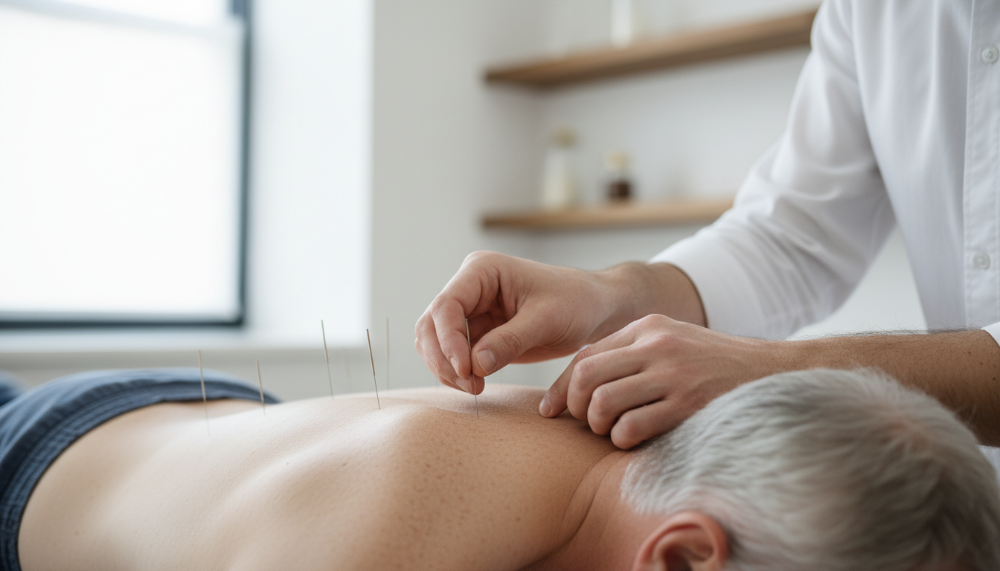

Gentle Acupuncture in the Comfort of Your Home
Acupuncture is a gentle and effective treatment that can help relieve pain, support recovery and promote a sense of overall wellbeing.

A Gentle Companion to Physiotherapy
Acupuncture is often used alongside physiotherapy to enhance results and support the body's natural healing process. Acupuncture is delivered in a calm, relaxed way within your own home — helping you feel at ease throughout treatment.
It works by stimulating specific points in the body using very fine needles, encouraging natural pain relief, improving circulation and helping muscles to relax.
Book a SessionConditions Acupuncture Can Support
Acupuncture can be beneficial for a wide range of conditions, including:
- Back and neck pain
- Joint pain (shoulder, knee, hip)
- Muscle tightness and tension
- Headaches and migraines
- Nerve-related pain such as sciatica
- Chronic or persistent pain conditions
A Calm, Relaxing Session at Your Pace
Treatment is always tailored to you and carried out at your pace. You will always be in control, and we'll ensure you feel safe and supported throughout.
Clear Explanation First
I will explain everything clearly before starting, including what the needles feel like, where they will be placed, and what you can expect to feel.
Gentle Needle Placement
Fine, sterile, single-use needles are gently inserted into specific areas. Most people feel little to no discomfort — many find it deeply relaxing.
Rest and Recover
Needles are usually left in place for a short period while you rest comfortably. I'll check in with you throughout to make sure you feel at ease.
Yes — When Carried Out by a Qualified Professional
Acupuncture is a safe and well-established treatment when carried out by a qualified professional. I use single-use, sterile needles and follow strict hygiene standards at all times.
If you are dealing with a recent injury or a long-standing issue, acupuncture can be a helpful addition to your treatment plan. My aim is to reduce pain, ease tension and help you move more freely — so you can get back to feeling like yourself again.